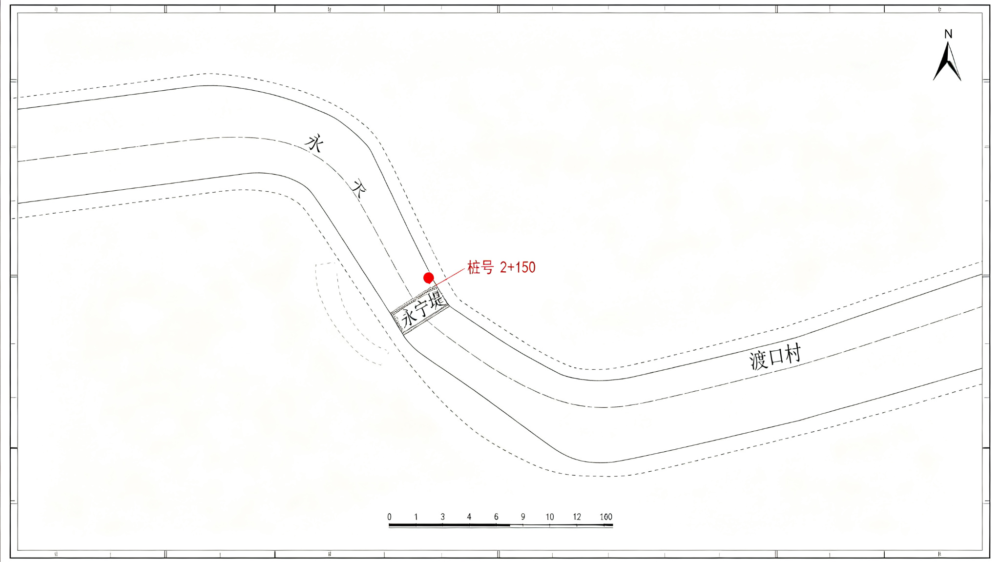

险情记录表 · 决口
怀安县防汛指挥部 · 1998-07-21

记录表所附手绘图 · 决口位置示意（扫描件）
险情记录
位置：永宁堤弯道段（桩号 2+150）
决口时间：7 月 21 日 02:31
口门宽度：初测约 8 米，后修正为 12 米
下游流速：远超设计值
人员：封堵组三人未及撤离，被卷入
附注：封堵组所用救生衣，现场仅见两件
这张表是原始件，没改过。它和"结案报告"里"安全转移"四个字，差着一条人命的距离。
记录表后面还别着一张手绘图，画的是决口位置，标注了水流方向。图上有个红圈，圈着一处"应当落闸"的地方，旁边写：堤上那盏灯。
"现场仅见两件"这句，是后来补写的，墨色比前文新。补写的人加完这五个字，又在下面画了一条横线——
像是怕这句话被漏掉，又像是希望它被漏掉。
记录表后面别着一张手绘图，红圈圈着一处"应当落闸"的地方。图上标的那盏灯，登记名是堤上那盏灯；与这场决口有关的正式文书，是结案报告。